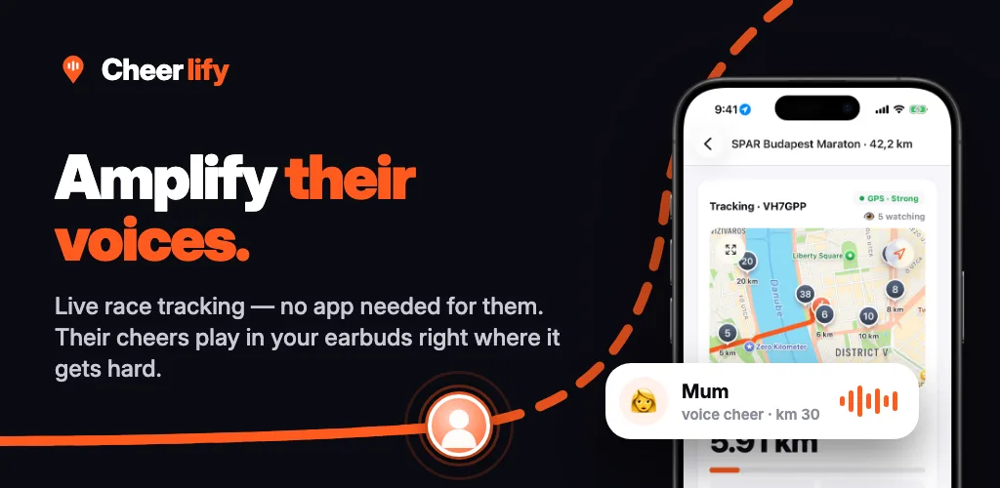
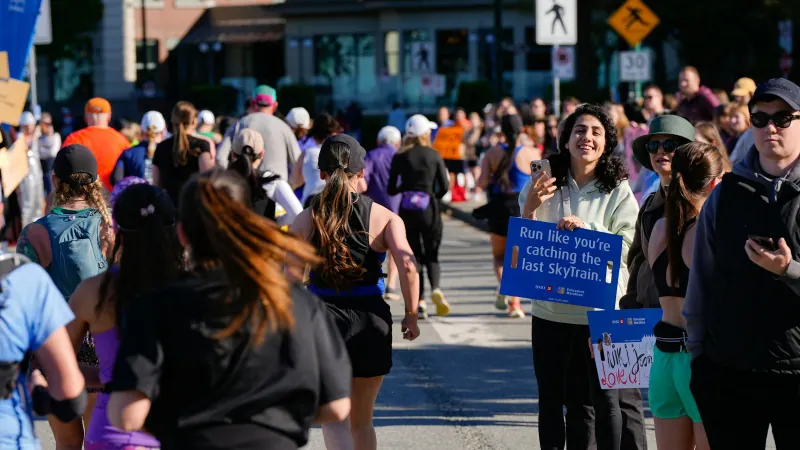
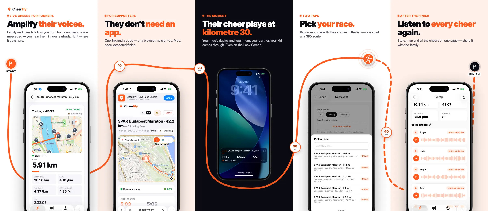
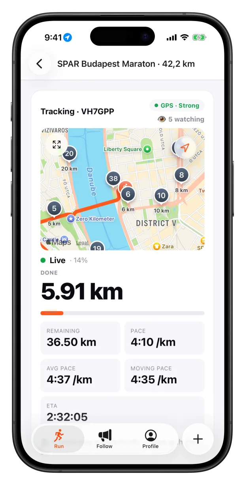
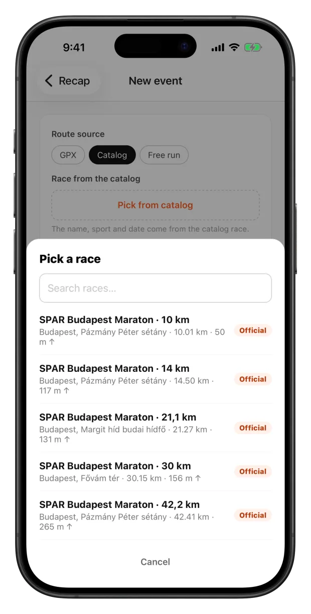
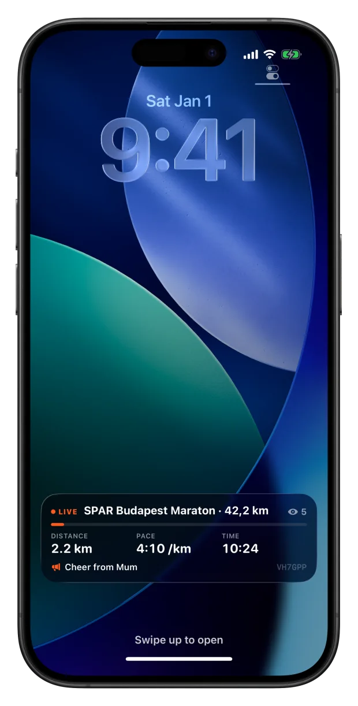
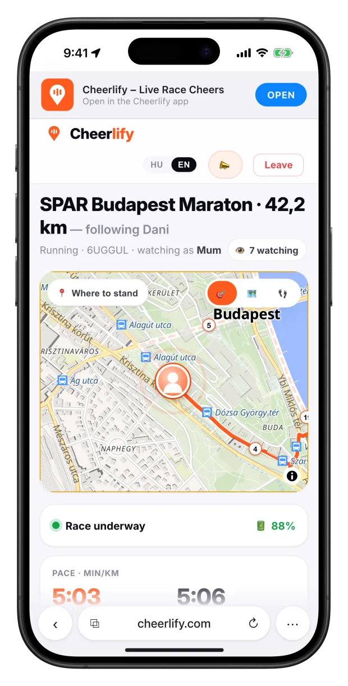
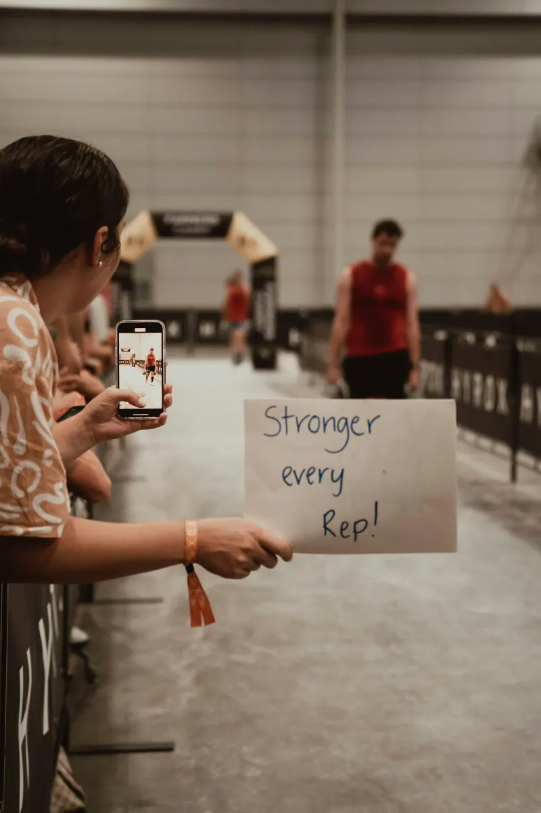
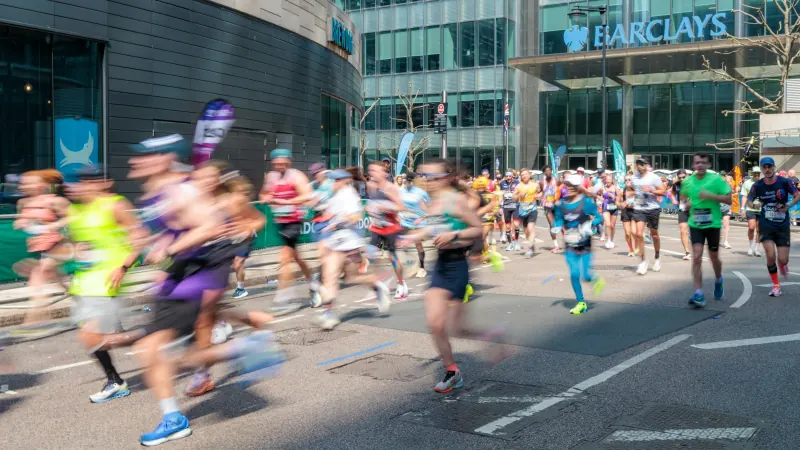
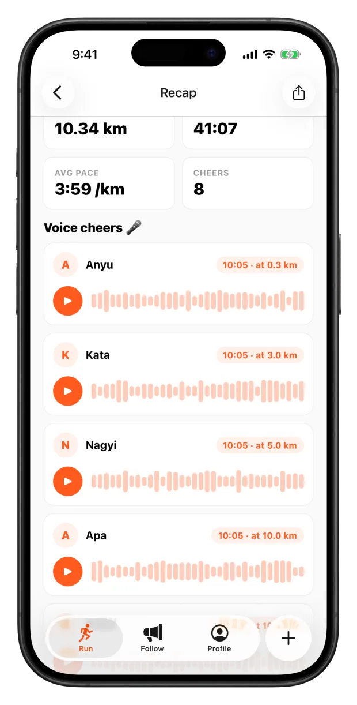

Cheerlify — Live race tracking with voice cheers
Friends and family follow a runner live in any browser. There's no app to install, but everyone joins under their own name through a private invite. They record a voice cheer, pin it to a kilometre, and it plays in the runner's earbuds right when that kilometre arrives. I designed and built the whole product: the mobile app, the web app, the backend and the infrastructure.

The problem
A marathon takes three to five hours. The people who came to support you see you for maybe ten seconds at one corner, and they usually miss the moment you actually need them: kilometre 30, when your legs are gone and there's nobody at the roadside.
Existing race trackers show a dot on a map, but the communication only goes one way. Chip-timing apps update at timing mats every 5 km, and fitness apps want every supporter to install something and create an account. None of them let the people at home actually reach the runner.
Cheerlify closes that loop. Supporters follow the runner live, and their recorded voices arrive in the runner's earbuds at the kilometre they chose.

How it works
The whole product is built around one race-day loop. The runner does the setup once before the race. Everyone else just gets a link.
- Create the raceUpload a GPX file or pick an official course from the catalog (for example SPAR Budapest Marathon, 42.2 km).
- Share one linkThe runner sends an invite link, or a race ID plus access code, to their own people. The event is private by default.
- Supporters follow liveThe link opens in any browser with no app to install. Each supporter enters their name, then sees a live map, distance, pace, splits and estimated finish time.
- They record a cheerA voice or video message with a trigger: instantly, at a chosen km, at halfway, in the last 5 km or in the last 1 km.
- It plays at the right kmWhen the runner reaches the trigger, the music ducks, a short spoken intro ("Cheer from Mum") plays, then the message. This works on the Lock Screen too.

The runner app
Set up before the start, then forget the phone
The runner app (React Native + Expo, iOS and Android) has three tabs: Run, Follow and Profile. Before the race you choose the course, the entry mode and how cheers should behave: whether music ducks or pauses, how often claps are allowed, and who can see the live map.
Once tracking starts, the phone goes in a pocket or an armband. A single background location task uploads GPS batches and plays cheers that are due. It keeps running with the screen locked, because that's where the phone actually is during a race.


Glanceable, even when locked
An iOS Live Activity puts distance, pace, elapsed time and the latest cheer on the Lock Screen. The runner can see who just cheered without unlocking anything.
Claps (lightweight one-tap support) are bundled into one signal per time window. The default is at most one every 20 seconds and three per minute, enforced under a database row lock. Fifty excited friends therefore can't turn a race into a stream of notification sounds.

The supporter side
No app to install, but never anonymous
The people who follow a runner are parents, partners and colleagues, often opening the link on a phone minutes before the start. Every extra step loses some of them. So the follower experience is a web app (React + Vite): open the link, type your name, and you're in.
Behind the scenes, every supporter gets a named session scoped to that one race. There's no password to create, but the name is required and it travels with every cheer and clap. The runner decides how people get in: a signed invite link, a race ID plus an access code of up to 12 characters, or a public link for those who explicitly want one. Access to one race never grants access to another. MapLibre with OpenFreeMap tiles renders the live course.

Cheers recorded in the browser
Voice and video cheers are recorded with the browser's MediaRecorder API and uploaded to random, unguessable URLs. Each supporter can send up to three cheers per race, which keeps the queue personal and not spammy.
A separate cheer-only mode is for people who can't watch live. They record a message days in advance, pin it to a kilometre, and never open the tracking screen.

Engineering the live loop
Drawing a moving dot is easy. The hard part is knowing where on the course the runner is, precisely enough that a cheer set for "km 30" plays at km 30, not at km 29.4 or on the way back from a turnaround.
Sequential map matching
GPS gives a position, not a distance along the route. The naive approach is to find the nearest point of the course line, for example with PostGIS ST_LineLocatePoint. That breaks on out-and-back and loop courses, where the nearest segment often belongs to a later part of the race.
Instead, the backend does a sticky, sequential projection in Python. Each ping is matched only within a plausible window ahead of the last known position. If the runner is lost (more than 35 m from the course), they are reacquired only when they are within 20 m and the implied pace is realistic (at most 1.8× the current pace).
In the 35 km test, a hairpin turn snapped the runner onto the return leg about 60 m too early. The fix uses GPS heading: a candidate segment that points the opposite way gets a 30 m virtual penalty above 1 m/s. When a ping has no heading, it is derived from the previous fixes. Rebuilding a 6,110-point run went from ~5 s to 0.82 s.

Background GPS that actually arrives
The first long test showed supporters a frozen marker. The cause was subtle. Expo's deferred location updates combine the time and distance thresholds with AND, so the original "60 s and 400 m" setting was really bound by distance at running pace. Batches left the phone only every ~3 minutes, and the P95 GPS delay was 164 s.
The fix is a 20-second window with distance 0 on both platforms. Distance 0 also works as a heartbeat on Android, which pauses JavaScript timers in the background. An offline backlog holds up to 3,000 points for tunnels and dead zones. An adaptive "Eco" mode lowers GPS accuracy when nobody is watching, to save battery.
Scaling the live map
A big city marathon means many races running at once, each with several people refreshing the map. I load-tested the stack with 100 simultaneous races and 5 viewers each, and rebuilt the live path in stages until it held up:
| Stage | Change | Result (100 races × 5 viewers) |
|---|---|---|
| Baseline | Recompute the full progress history on every 3-second poll | 1,647 ms per request; 3,000 timeouts vs 36 successful |
| Phase 1 | Incremental live state per event and participant | 9,844 successful, 0 errors; P50 0.6 s |
| Phase 2 | Conditional polling with ETags, asynchronous commits | P50 0.1 s |
| Phase 2b | Server-Sent Events push, fed by Postgres LISTEN/NOTIFY | GPS → viewer P50 0.35 s |
| Final | Same architecture, tuned | P50 0.23 s · P95 0.37 s · max 0.70 s · 0 errors |
A capacity ladder from 250 to 2,000 viewers puts the ceiling at about 1,250 concurrent viewers with P95 under one second, on a 4 vCPU / 6 GB virtual machine. Beyond that, the two SSE workers become the bottleneck while database connections stay flat. That tells me exactly what to scale next.
The 35 km field test
The simulator can't prove that background GPS, audio ducking and network recovery work together for four hours in a pocket. So I ran it: 35 km, 4 h 17 min, 5,726 GPS points, 15 followers, 6 cheers played and 19 claps, with the backend averaging 2.6% CPU and zero server errors.
The run produced 12 logged issues, including the hairpin snap, the batching delay, heartbeat pings being dropped as duplicates and a proxy header that broke media URLs in release builds. Eleven are fixed. The last one, a controlled battery test, is still open, and I don't publish a battery claim until it's measured properly.

After the finish: the recap
The recap page brings together the route, the stats, every cheer (playable again), an audience timeline showing how many people watched at each kilometre, and a shareable card.
An earlier version also rendered a recap video on the server with headless Chromium and ffmpeg. It worked, but it was too heavy for the hardware and ran inside the request thread. I shelved it deliberately rather than let it threaten the live path, which is the part people actually depend on.
Business model & operations
Tracking is free. Cheers and reach are paid. Pricing tiers follow the number of concurrent live viewers, because viewers are what drive server cost. A free race supports 3 viewers and comes with 3 welcome cheers. A Race Pack (€4.99) gives 7 viewers and 10 cheers. A Marathon Pack (€12.99) gives 50 viewers, unlimited cheers, video, scheduled cheers and a custom race ID. A yearly Season Pass covers every race.
Payments. I replaced Stripe with native in-app purchases. StoreKit transactions are verified on the backend against Apple's root certificates, and refunds arrive through App Store Server Notifications. Store prices are pinned by script so Apple and Google never drift apart.
Operations. The backend runs Django + DRF on PostgreSQL/PostGIS, with a separate ASGI service for SSE. It's deployed with Docker Compose behind a Cloudflare Tunnel, with point-in-time-recovery backups plus an encrypted off-site copy, Sentry and transactional email. A founder control center covers metrics, moderation (DSA notice-and-action), incidents and a newsletter, with 2FA and roles.
Privacy by design. A live GPS position is sensitive data, so access is the runner's decision. Races are private by default, entry is gated by a signed invite link or an access code, every supporter is identified by name, and a report from the runner or a moderator hides content instantly. Admin views never show a runner's GPS trace or access code. Analytics are self-hosted and cookie-less. Marketing attribution is first-party: UTM tags on the landing page carry through to the App Store campaign token, so I can see which channel actually produces installs.
- Mobile — React Native, Expo dev build, expo-location background task, expo-audio with ducking, Live Activities, Apple Maps / MapLibre
- Web — React, Vite, TypeScript, prerendered HU/EN marketing pages and blog, MapLibre + OpenFreeMap
- Backend — Django 6, DRF, PostgreSQL 16 + PostGIS, SSE over LISTEN/NOTIFY, a scheduler for periodic jobs
- Shared — a
@cheerlify/sharedTypeScript package with API types and translations for both clients - Infrastructure — Docker Compose on Proxmox, Cloudflare Tunnel, WAL-G backups to R2, Sentry, Resend, self-hosted Umami
Status & lessons
Where it is now. The web platform is public at cheerlify.com. The iOS app has been submitted to the App Store, and the Android app is in Google Play closed testing. The first target event is the SPAR Budapest Marathon in October 2026.
What I learned. The product only feels simple if four imperfect systems agree with each other: GPS, mobile background execution, browser recording and audio playback. Most of the real work went into the gaps between them. That meant measuring with benchmarks and a real 35 km run instead of trusting the simulator, and cutting features (a server-rendered video, heart rate, a Strava integration) when they put the core loop at risk.
Try it on your next race
Create a race, share the link, and let your people reach you at kilometre 30.